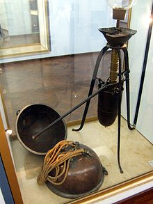
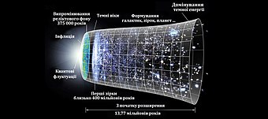
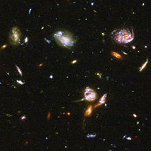

Космічний простір
Космі́чний про́стір, або ко́смос (дав.-гр. κόσμος − всесвіт) — відносно порожні ділянки Всесвіту, розташовані поза межами атмосфер небесних тіл. Всупереч розповсюдженій думці, космос не цілком порожній, але у ньому дуже низька густина речовини. Переважно це водень в атомарному, молекулярному чи іонізованому стані, також є інші прості гази (гелій, азот, кисень), тверді частинки пилу, що містять переважно вуглець, а за допомогою мікрохвильової спектроскопії виявлено кілька десятків різних молекул. Водночас космос заповнений електромагнітним випромінюванням, зокрема реліктовим випромінюванням що лишилося після Великого Вибуху, та космічними променями, в яких містяться іонізовані атомні ядра та різні субатомні частинки.
Зміст
Вступ
Космічний простір існує поза атмосферою Землі й між небесними тілами. Як зазначено в передмові, космічний простір не зовсім порожній, він має низьку щільність частинок, переважно плазму водню та гелію, а також електромагнітне випромінення, магнітні поля, нейтрино, пил та космічні промені. Базова температура космосу, котра визначається реліктовим випроміненням Великого вибуху, становить 2,7 Кельвінів (−270,45 °C; −454,81 °F). Плазма між галактиками складає близько половини баріонної (звичайної) речовини у Всесвіті; вона має густину менше одного атома водню на кубічний метр і температуру мільйони Кельвінів. Місцеві скопища речовини, скупчуються у зірки та галактики. Дослідження показують, що 90 % маси більшості галактик перебуває у невідомому вигляді, що називається темною матерією, яка взаємодіє з іншою речовиною за допомогою гравітаційних, але не електромагнітних сил. Спостереження дозволяють припустити, що більшість масової енергії у спостережуваному Всесвіті, це темна енергія — вид енергії вакууму який недостатньо вивчений. Міжгалактичний простір охоплює більшу частину обсягу Всесвіту, але навіть галактики та зоряні системи майже цілком складаються з порожнього простору.
Межі міжнародного космічного права були встановлені Договором про космос, котрий набув чинності 10 жовтня 1967 року. Цей договір запобігає будь-яким посяганням стосовно національного суверенітету і дозволяє всім державам вільно досліджувати космос. Попри розробку резолюцій ООН щодо мирного використання космічного простору, на земній орбіті вже було випробувано протисупутникову зброю.
Фізичні дослідження космосу люди розпочали у 20 столітті з появою висотних польотів на повітряній кулі. За цим пішли пілотовані ракетні польоти. Через високу вартість потрапляння в космос, пілотований космічний політ був обмежений низькою орбітою Землі та Місяцем. Натомість, безпілотні космічні апарати вже досягли усіх відомих планет Сонячної системи.
Космічний простір є складним середовищем для дослідження людиною через небезпеку вакууму та випромінювання. Мікрогравітація також погано впливає на фізіологію людини, та спричинює як ослаблення м'язів, так і втрату кісткової маси. Окрім цих питань охорони здоров'я та довкілля, економічні витрати на розміщення предметів, зокрема людей, у космосі дуже високі.
Відкриття
350 року до н. е., грецький філософ Арістотель припустив, що природа не терпить порожнечі — принцип, який став відомим як жах вакууму. Ця концепція побудована на онтологічному аргументі 5 століття до н. е. грецького філософа Парменіда, який заперечував можливе існування порожнечі в просторі. Виходячи з цього міркування про те, що вакууму не може бути, на Заході багато століть вважалося, що простір не може бути порожнім. Ще в 17 столітті французький філософ Рене Декарт стверджував, що весь космос повинен бути заповнений.
У стародавньому Китаї астроном 2-го століття Чжан Хен досяг переконання, що космос мусить бути нескінченним, виходячи далеко за межі механізму, який підтримував Сонце та зірки. У книжках, що збереглися в школі Хсюан Іє, йдеться про те, що небо безмежне, «порожнє і не має речовини». Отже «Сонце, Місяць і скупчення зірок плавають у порожньому просторі, рухаючись або стоячи нерухомо».
Італійський вчений Галілео Галілей знав, що повітря має вагу, і завдяки цьому воно підлягає силі тяжіння. 1640 року він показав, що встановлена сила чинить опір утворенню вакууму. Однак його учневі Еванджелісті Торрічеллі залишиться виготовити пристрій, який утворить частковий вакуум, 1643 року. Цей дослід спричинив створення першого ртутного барометра і сприяв науковому розголосу в Європі. Французький математик Блез Паскаль вважав, що оскільки стовпчик ртуті підтримується повітрям, то колонка-показник повинна бути коротшою на більшій висоті, де тиск повітря нижчий. 1648 року його зять Флорін Перьє повторив дослід на горі Пюї-де-Дом у центральній Франції і виявив, що стовпчик був коротший на три сантиметри. Таке зниження тиску було показано також піднесенням напівповної повітряної кулі догори, та спостереженням як вона поступово розширюється, а потім стискається після спуску.
1650 року німецький вчений Отто фон Ґеріке виготовив перший вакуумний насос: пристрій, який би надалі спростовував явище жаху вакууму. Він правильно зазначив, що атмосфера Землі оточує планету як оболонка, до того-ж її густина поступово зменшується з висотою. Також він зробив висновок, що між Землею та Місяцем повинен бути вакуум.
Ще в XV столітті німецький богослов Микола Кузанський припускав, що Всесвіту не вистачає центру та окружності. Він вважав, що Всесвіт, хоча і не є нескінченним, не може вважатися обмеженим, оскільки йому не вистачає меж, у яких він міг би міститися. Ці роздуми, спричинили міркування щодо нескінченного виміру простору італійським філософом Джордано Бруно у 16 столітті. Він поширив геліоцентричну космологію Коперника на висновок щодо нескінченності Всесвіту, наповненого речовиною, яку він назвав ефіром, котра не чинила опору руху небесних світил. Англійський філософ Вільям Гілберт дійшов подібного висновку, стверджуючи, що зірки нам видні лише завдяки тому, що їх оточено тонким ефіром або порожнечею. Це вчення про ефір, виникло у давньогрецьких філософів, зокрема Арістотеля, який тлумачив його як середовище, крізь яке рухаються небесні світила.
Концепція Всесвіту, наповненого світловим ефіром, зберігала підтримку серед деяких вчених до початку 20 століття. Ця форма ефіру розглядалася як середовище, крізь яке може поширюватися світло. 1887 року, дослідом Майкельсона — Морлі намагалися виявити рух Землі крізь це середовище, шукаючи зміни швидкості світла залежно від напрямку руху планети. Однак нульовий підсумок вказував, що з концепцією щось було не так. Тоді передбачення щодо світлоносності ефіру було полишено. Його замінила спеціальна теорія відносності Альберта Ейнштейна, яка стверджує, що швидкість світла у вакуумі є постійною величиною, незалежною від руху спостерігача чи системи відліку.
Першим професійним астрономом, який підтримав вчення нескінченного Всесвіту, був англієць Томас Діггес 1576 року. Але обсяг Всесвіту залишався невідомим до першого успішного вимірювання відстані до сусідньої зірки 1838 року німецьким астрономом Фрідріхом-Вільгельмом Бесселем. Він показав, що у зірки 61 Лебедя був паралакс всього 0,31 кутових секунди (порівняно із сучасним значенням 0,287 ″). Це відповідає відстані понад 10 світлових років. 1917 року, Гебер Дуст Кертіс зазначав, що нові зорі у спіральних туманностях, в середньому на 10 величин слабші ніж галактичні нові, і це дозволяє припустити, що перші розташовані у 100 разів далі. Відстань до галактики Андромеди було визначено 1923 року американським астрономом Едвіном Габблом, завдяки вимірюванню яскравості змінних цефеїд у цій галактиці — новому способу, відкритому Генрієттою Свон Лівітт. Це встановило, що галактика Андромеди, отже і всі галактики, лежать далеко за межами Чумацького Шляху.
Становлення та будова
Згідно з теорією Великого вибуху, первинний Всесвіт близько 13,8 мільярдів років тому був надзвичайно гарячим та щільним утворенням, яке стрімко розширювалося. Приблизно за 380 000 років Всесвіт охолов достатньо, аби протони та електрони могли поєднуватися та утворювати водень — так звана епоха рекомбінації. Коли це сталося, речовина та випромінювання відокремилися, що дозволило фотонам вільно рухатися крізь простір, який постійно розширюється. Матерія, котра залишилася після початкового розширення, відтоді зазнала гравітаційного колапсу зі створенням зір, галактик та інших астрономічних об'єктів, облишивши після себе глибокий вакуум, який утворює те, що зараз називають космосом. Оскільки світло має скінчену швидкість, ця теорія також обмежує розміри, безпосередньо спостережуваним Всесвітом. Це залишає відкритим питання, чи є Всесвіт скінченим або нескінченним.
Сучасний вигляд Всесвіту було визначено з вимірювань реліктового випромінювання за допомогою супутників, таких як WMAP. Ці спостереження вказують на те, що просторова геометрія спостережуваного Всесвіту є майже «пласкою», тобто, його кривина близька до нуля. Плаский Всесвіт у поєднанні з виміряною густиною маси (енергії) Всесвіту та прискореним розширенням вказують на те, що простір має ненульову енергію, яку називають темною енергією.
За оцінками, середня густина енергії сучасного Всесвіту (разом із темною енергією, темною матерією та видимою речовиною, яка складається з атомів), дорівнює енергії 5,9 протонів на кубічний метр. Однак, атоми становлять лише 4,6 % від загальної густини енергії або один протон на чотири кубічні метри. Втім, густина Всесвіту дуже неоднакова; вона змінюється від відносно високої густини галактик (зокрема, дуже висока густина в деяких структурах усередині галактик, таких як планети, зорі та чорні діри) до умов у величезних порожнинах, які мають значно меншу густину, принаймні, спостережуваної речовини. На відміну від спостережуваної речовини та темної матерії, темна енергія, здається, не зосереджена в галактиках: хоча темна енергія може становити більшість маси-енергії у Всесвіті, але в межах Чумацького Шляху вплив темної енергії на 5 порядків менший, ніж дія сил тяжіння від речовини й темної матерії.
Середовище
Це чорне тло зі світлими космічними тілами різних розмірів, розкиданими навмання. Зазвичай вони мають білі, червоні або сині відтінки. Космічний простір — найвідоміше наближення до взірцевого вакууму. Він майже не має тертя, що дозволяє зіркам, планетам і їх супутникам, вільно рухатися зразковими орбітами, слідуючи початковому етапу становлення. Однак навіть глибокий вакуум міжгалактичного простору не позбавлений речовини, оскільки він як зазначено вище, містить кілька атомів водню на кубічний метр. Для порівняння, повітря, котрим люди дихають, містить близько 1,9×1025 молекул на кубічний метр. Низька густина речовини в космічному просторі означає, що електромагнітне випромінення може долати великі відстані без розсіювання: середній вільний шлях фотона в міжгалактичному просторі, становить приблизно 1023 км, або 10 мільярдів світлових років. Попри це, вимирання, яке є поглинанням і розсіюванням фотонів пилом і газом, є важливим чинником галактичної та міжгалактичної астрономії.
Зірки, планети та їх супутники утримують власну атмосферу гравітаційним тяжінням. Атмосфери не мають чітко окресленої верхньої межі: густина атмосферного газу поступово зменшується з відстанню від небесного тіла, поки її не відрізнити від космосу. Атмосферний тиск Землі спадає приблизно до 0,032 Па на 100 кілометрів (62 милі) висоти порівняно зі 100 000 Па, для визначення стандартного тиску Міжнародним союзом чистої та прикладної хімії (IUPAC). Над цією висотою, ізотропний тиск газу швидко стає незначним порівняно з тиском випромінення від Сонця та динамічним тиском сонячного вітру. Термосфера в цьому діапазоні має великі градієнти тиску, температури та складу і дуже змінюється через космічну погоду.
Температура космічного простору, вимірюється з урахуванням кінетичної активності газу, як і на Землі. Однак випромінювання космічного простору має іншу температуру, ніж кінетична температура газу і це означає, що газ та випромінення не перебувають у термодинамічній рівновазі. Весь спостережуваний Всесвіт заповнений фотонами, які було створено під час Великого вибуху, котрі відомі як космічне мікрохвильове фонове випромінення (CMB). (Цілком ймовірно, що відповідно, велика кількість нейтрино, називається фоном космічних нейтрино.) Поточна температура чорного тіла фонового випромінювання, становить приблизно 3 К (−270 ° C; −454 ° F).
Магнітні поля було виявлено в просторі навколо майже кожного класу небесних об'єктів. Утворення зірок у спіральних галактиках може породжувати дрібно-розмірні динамо, створюючи бурхливі напруження магнітного поля близько 5–10 мкГ. Ефект Девіса-Грінштейна змушує витягнуті пилові зерна вирівнюватися згідно магнітного поля галактики, що призводить до слабкої оптичної поляризації. Це було використано для показу впорядкованих магнітних полів, котрі існують у кількох сусідніх галактиках. Магнітогідродинамічні процеси в активних еліптичних галактиках, виробляють власні притаманні їм струмені та радіо-частки. Нетеплові радіоджерела виявлено навіть серед найвіддаленіших джерел з червоним зсувом, що свідчить про наявність магнітних полів. Поза захисною атмосферою та магнітним полем, існує мало перешкод для проходу крізь простір енергетичних субатомних частинок, відомих як космічні промені. Ці частинки мають енергію у межах від приблизно мільйона еВ до надзвичайних ста квінтильйонів еВ космічних променів надвисоких енергій. Сплесковий потік космічних променів відбувається за енергій близько більйона еВ — приблизно 87 % протонів, 12 % ядер гелію і 1 % важчих ядер. У високоенергетичному діапазоні, потік електронів становить лише близько 1 % від протонів. Космічні промені можуть пошкодити електронні компоненти та становити загрозу здоров'ю для космічних мандрівників. Згідно розповідей астронавтів, як Дон Петтіт, у космосі є палений / металевий запах, який чіпляється за їхні костюми й обладнання та подібний до запаху пальника дугового зварювального пристрою.
Межа атмосфери
Чіткої межі між земною атмосферою та космосом не існує, оскільки зі збільшенням висоти атмосфера розріджується поступово. Якби температура була постійною, то тиск би змінювався за експоненціальним законом від 100 КПа на рівні моря до нуля. Міжнародна авіаційна федерація (ФАІ) робочою межею між атмосферою та космосом встановила висоту 100 км[1] (умовна лінія Кармана). У США астронавтами вважають людей, що перебували на висоті понад 50 миль (≈80 км).
Віхи на шляху до космосу
- Рівень моря — 100 кПа (1 атм.; 760 мм. рт. ст;) атмосферного тиску.
- 4,6 км — Міжнародна Федерація Аеронавтики вимагає додаткового постачання кисню для пілотів та пасажирів.
- 5,0 км — 50 кПа атмосферного тиску.
- 5,3 км — Половина усієї атмосфери перебуває нижче цієї висоти.
- 8,8 км — Найвища точка Землі, вершина гори Еверест.
- 16 км — Потреба додаткового тиску у кабіні.
- 18 км — Межа між тропосферою та стратосферою.
- Закипання води за кімнатної температури тілесні рідини не починають кипіти, оскільки тіло створює достатній внутрішній тиск, щоби запобігти цьому явищу
- 24,7 км — Рекорд висоти для повітряної кулі, керованої людиною
- 32 км — Турбореактивні двигуни припиняють працювати.
- 45 км — Прямотічні повітряно-реактивні двигуни перестають працювати.
- 50 км — Межа між стратосферою та мезосферою.
- 80 км — Межа між мезосферою та термосферою
- 100 км — Лінія Кармана, що визначає умовну межу між атмосферою та космосом. Аеродинамічні поверхні стають неефективними, для створення потрібної підіймальної сили, потрібно досягти першої космічної швидкості.
- 120 км — Помітні прояви атмосфери під час повернення на Землю з орбіти.
- 200 км — Найнижча можлива орбіта з короткотерміновою стабільністю (до кількох днів).
- 350 км — Найнижча можлива орбіта з довготерміновою стабільністю (до кількох років)
- 690 км — Межа між термосферою та екзосферою.
Вплив відкритого космосу на живі організми
Усупереч розповсюдженій думці, потрапивши у відкритий космос людина миттєво не замерзне, не вибухне й не знепритомніє, її кров не закипить. Натомість настане доволі швидка смерть від нестачі кисню. Водночас, зі слизових оболонок організму (язик, очі, мембрани в легенях) почне швидко випаровуватись вода. Деякі додаткові загрози — опіки незахищених ділянок шкіри та ураження інших приповерхневих тканин тіла — почнуться приблизно після 10 секунд. Отже, якщо не затримувати подих у легенях, то 30…60 секунд перебування у відкритому космосі не спричинять незворотних ушкоджень людському організмові[2].
Поділ космічного простору
Космічний простір поділяють на такі ділянки, які мають різні властивості
- навколоземний космічний простір — обшир, що розташований за межами атмосфери Землі у межах орбіти Місяця (зокрема точки Лагранжа системи Земля — Місяць) (в англійській мові інколи вживається термін cislunar space[5]). На відміну від інших ділянок космосу навколоземний простір містить космічне сміття — речі, що лишилися від людської діяльності на орбітах.
- ділянку космосу, де гравітація Землі залишається визначальною відносно пертурбацій від Сонця, називають сферою Гілла Землі.
- міжпланетний простір — обшир у Сонячній системі поза навколоземним простором. Його умовною межею вважають геліопаузу. Концентрація частинок у міжпланетній широчіні становить менше 107 на см³.
- міжзоряний простір — обшир між зорями всередині галактик. Концентрація атомів у міжзоряному середовищі змінюється від 106 на см³ (на холодних насичених ділянках) до 10−4 на см³ (на гарячих розріджених ділянках, де речовина здебільшого іонізована). У між-хмарному середовищі (яке охоплює близько половини об'єму галактичного диску) вона становить у середньому 0,2 атома на см³.
- міжгалактичний простір — частина космосу між галактиками. Заповнена вкрай розрідженим іонізованим газом із середньою густиною близько 1 атома на 1 дм³ (10−4…10−2 на см³).
Поряд із цим вживаним, є умовний поділ космічного простору за відстанню від Землі на:
- ближній космос;
- далекий (глибокий або відкритий) космос.
Чіткої межі між ними не встановлено[6]: одні дослідники проводять межу за гравітаційною сферою Землі (тобто, відносять міжпланетний простір до глибокого космосу)[7], інші ж вважають міжпланетний простір частиною ближнього космосу (тобто, проводять межу ближнього космосу за геліопаузою або за сферою Гілла Сонця)[3].
В 2023 році, вчені з Гельсінський університету (Фінляндія), розробили комп’ютерну модель Vlasiator, що може моделювати ближній космос у форматі 6D. Завдяки симуляції Vlasiator, яка потребує потужності суперкомп’ютера, вчені змогли вперше змоделювати приземний космічний простір у шести вимірах. Процес розробки програмного забезпечення зайняв понад 10 років. Результати зазначеного дослідження були опубліковані в науковому журналі Nature Geoscience[8].
Космічні польоти
Щоб вийти на орбіту, тіло має досягти певної швидкості. Космічні швидкості для Землі:
- Перша космічна швидкість — 7,9 км/с;
- Друга космічна швидкість — 11,168 км/с — швидкість для відходу зі сфери тяжіння Землі;
- Третя космічна швидкість — 16,67 км/с — швидкість для відходу зі сфери тяжіння Сонця і виходу в міжзоряний простір;
- Четверта космічна швидкість — близько 550 км/с — швидкість для відходу зі сфери тяжіння галактики Чумацький Шлях і виходу в міжгалактичний простір. Для порівняння, швидкість руху Сонця відносно центру галактики становить приблизно 220 км/с.
Вважається, ніби першим, хто зрозумів, що для досягнення таких швидкостей з використанням будь-якого хімічного пального потрібна багатоступенева ракета, був Костянтин Ціолковський.
Відсутність повітря робить космічний простір (та поверхню Місяця) зразковими місцями для астрономічних спостережень на всіх довжинах хвиль електромагнітного спектру. Космічні телескопи (як-от космічний телескоп «Габбл», космічний телескоп Спітцера, IRAS, WMAP, UHURU, Чандра) попри свої невеликі розміри (порівняно із земними) отримують неповторні дані, які майже неможливо одержати на поверхні Землі. Водночас, неоціненні відомості про планети, астероїди та комети Сонячної системи отримують за допомогою космічних апаратів.
Дослідження і використання
Протягом більшої частини історії людства, космос досліджувався за допомогою спостережень, проведених з поверхні Землі — спочатку неозброєним оком, а згодом за допомогою телескопа. До появи надійних ракетних технологій, найближче досягання людиною космічного простору — це польоти на повітряній кулі. 1935 року, пілотована повітряна куля US Explorer II сягнула висоти 22 км (14 миль). Це було значно перевершено 1942 року, коли під час третього пуску німецької ракети, А-4 залетіла на висоту близько 80 км (50 миль). 1957 року, «Супутник-1» без екіпажу був запущений радянською ракетою Р-7 під керівництвом основоположника практичної космонавтики, уродженця Житомира С. П. Корольова, досягнувши навколоземної орбіти на висоті 215...939 кілометрів (134...583 милі). За цим пішов перший політ людини в космос 1961 року, коли Юрій Гагарін був відправлений на орбіту, «Востоком-1». Першими людьми, які покинули навколоземну орбіту, були Френк Борман, Джим Ловелл і Вільям Андерс котрі 1968 року, на борту американського космічного корабля «Аполлон-8», досягли місячної орбіти та найбільшої відстані 377 349 км (234 474 миль) від Землі.
Першим космічним кораблем, який досяг космічної швидкості, став радянський космічний апарат «Луна-1», що зробив обліт Місяця 1959 року. 1961 року «Венера-1» став найпершим планетарним зондом. Він виявив наявність сонячного вітру і зробив перший проліт Венери, хоча зв'язок з ним було втрачено ще до досягнення Венери. Першою успішною планетарною місією, був проліт «Маринера-2» над Венерою 1962 року. Перший проліт Марса був здійснений «Маринером-4» 1964 року. З тих пір безпілотні космічні кораблі успішно досліджували кожну з планет Сонячної системи, а також їх супутники та безліч малих планет і комет. Вони залишаються основним засобом для дослідження космічного простору, а також для спостереження за Землею. У серпні 2012 року, «Вояджер-1» став першим штучним об'єктом, який залишив Сонячну систему і увійшов в міжзоряний простір.
Відсутність повітря робить космічний простір взірцевим місцем для астрономії на всіх довжинах хвиль електромагнітного спектру. Про це свідчать неймовірні зображення, відправлені космічним телескопом Габбла, що дозволяють спостерігати світло, яке з'явилося більше 13 мільярдів років тому — майже від миті Великого вибуху. Далеко не кожне місце в космосі, зразково підходить для телескопа. Міжпланетний зодіакальний пил випромінює дифузне ближнє інфрачервоне випромінення, яке може приховувати випромінення слабких джерел, таких як позасонячні планети. Переміщення інфрачервоного телескопа в місце без пилу, збільшить його ефективність. Отже, таке місце, як кратер Дедал на зворотному боці Місяця, могло б захистити радіотелескоп від радіочастотних перешкод, котрі ускладнюють спостереження з Землі.
Безпілотні космічні кораблі на навколоземній орбіті — важлива технологія сучасної цивілізації. Вони дозволяють здійснювати пряме спостереження погодних умов, передавати сигнали засобів зв'язку на великі відстані, наприклад телебачення, забезпечувати точну навігацію та дистанційне зондування Землі. Останнє призначення служить найрізноманітнішим цілям, зокрема: відстеження вологості ґрунту для сільського господарства, передбачення відтоку води з сезонних снігових покривів, виявлення хвороб рослин і дерев і спостереження за військовою діяльністю.
Глибокий космічний вакуум, може зробити його привабливим середовищем для певних промислових процесів, наприклад тих, які вимагають надчистої поверхні. Як і видобуток корисних речовин з астероїдів, космічне виробництво потребує великих фінансових вкладень з невеликими перспективами негайної віддачі. Важливим чинником загальних витрат, була висока вартість виведення маси на навколоземну орбіту: 8 000-25 000 доларів за кг, за остаточною оцінкою 2006 року (з урахуванням інфляції з тих пір). Вартість доступу в космос з 2013 року, знизилася. Частково — багаторазові ракети, такі як Falcon 9, знизили доступ в космос до рівня нижче 3500 доларів за кілограм. Але навіть з цими новими ракетами, вартість відправлення матеріалів в космос, залишається непомірно високою для багатьох галузей промисловості. Пропоновані концепції для вирішення цієї проблеми, передбачають повністю багаторазові пускові системи, неракетні космічні запуски, троси для обміну імпульсом і космічні ліфти.
Міжзоряна подорож для людської команди, залишається в 2020-х роках лише теоретичною можливістю. Відстані до найближчих зірок означають, що для цього будуть потрібні нові технологічні розробки та можливість безпечно підтримувати екіпажі для подорожей, які триватимуть щонайменше кілька десятиліть. Наприклад, впровадження проєкту «Дедал», в якому пропонувалося створити космічний корабель, що працює на синтезі дейтерію і гелію-3, зажадало-б 36 років, щоби досягти «найближчої» системи Альфа Центавра. Інші запропоновані міжзоряні рушійні установки охоплюють: легкі вітрила, прямотічні повітряні двигуни і силові установки з променевою тягою.
Правовий статус космічного простору
Космічний простір відкритий для дослідження і використання всіма державами, він вважається загальною спадщиною людства. Щодо нього діє заборона національного привласнення (на відміну від повітряного простору над територією держави, щодо якого держава має повний та винятковий суверенітет)[1].
Космічний простір частково демілітаризований — заборонено виводити на навколоземні орбіти чи іншим чином розміщувати в космосі, ядерну зброю та інші види зброї масового знищення[1].
Однією важливих проблем визнано утворення на навколоземних орбітах космічного сміття, що становить серйозну загрозу для космічних апаратів, призводить до припинення програм польоту, а у разі пілотованих апаратів — може призвести і до втрати життя[1]. Для запобігання його накопиченню, Комітетом ООН з використання космічного простору в мирних цілях 2007 року було ухвалено «Керівні принципи запобігання утворенню космічного сміття», які схвалено резолюцією Генеральної Асамблеї ООН № A/RES/62/217 від 01.02.2008 року.[9]